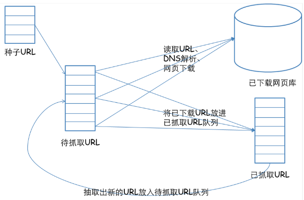

什么是网络爬虫？
网络爬虫是一个自动提取网页的程序。
from wiki:
网络蜘蛛（Web spider）也叫网络爬虫（Web crawler），蚂蚁（ant），自动检索工具（automatic indexer），或者（在FOAF软件概念中）网络疾走（WEB scutter），是一种“自动化浏览网络”的程序，或者说是一种网络机器人。它们被广泛用于互联网搜索引擎或其他类似网站，以获取或更新这些网站的内容和检索方式。它们可以自动采集所有其能够访问到的页面内容，以供搜索引擎做进一步处理（分检整理下载的页面），而使得用户能更快的检索到他们需要的信息。
网络爬虫始于一张被称作种子的统一资源地址（URLs）列表。当网络爬虫访问这些统一资源定位器时，它们会甄别出页面上所有的超链接，并将它们写入一张＂待访列表＂，即所谓＂爬行疆域＂（crawl frontier）。此疆域上的统一资源地址将被按照一套策略循环访问。如果爬虫在他执行的过程中复制归档和保存网站上的信息，这些档案通常储存，使他们可以被查看。阅读和浏览他们的网站上实时更新的信息，并保存为网站的“快照”。大容量的体积意味着网络爬虫只能在给定时间内下载有限数量的网页，所以要优先考虑其下载。高变化率意味着网页可能已经被更新或者删除。一些被服务器端软件生成的URLs（统一资源定位符）也使得网络爬虫很难避免检索到重复内容。
工作原理
网络爬虫的抓取策略

在爬虫系统中，待抓取URL队列是很重要的一部分。待抓取URL队列中的URL以什麽样的顺序排列也是一个很重要的问题，因为这涉及到先抓取那个页面，后抓取哪个页面。而决定这些URL排列顺序的方法，叫做抓取策略。网页的抓取策略可以分为深度优先、广度优先和最佳优先三种。深度优先在很多情况下会导致爬虫的陷入(trapped)问题，目前常见的是广度优先和最佳优先方法。
深度优先
深度优先，即从起始网页开始，选择一个URL，进入，分析这个网页中的URL，选择一个再进入。如此一个链接一个链接地深入追踪下去，处理完一条路线之后再处理下一条路线。
该类爬虫设计时较为简单。然而深度优先型网络爬虫存在一个问题：门户网站提供的链接往往最具价值，PageRank也很高，而每深入一层，网页价值和PageRank都会相应地有所下降。这暗示了重要网页通常距离种子较近，而过度深入抓取到的网页却价值很低。
由于这个缺陷，广度优先策略产生了。
广度优先
广度优先搜索策略是指在抓取过程中，在完成当前层次的搜索后，才进行下一层次的搜索。该演算法的设计和实现相对简单。在目前为覆盖尽可能多的网页，一般使用广度优先搜索方法。也有很多研究将广度优先搜索策略应用于聚焦爬虫中。其基本思想是认为与初始URL在一定链接距离内的网页具有主题相关性的概率很大。另外一种方法是将广度优先搜索与网页过滤技术结合使用，先用广度优先策略抓取网页，再将其中无关的网页过滤掉。这些方法的缺点在于，随著抓取网页的增多，大量的无关网页将被下载并过滤，演算法的效率将变低。
最佳优先
最佳优先搜索策略按照一定的网页分析演算法，预测候选URL与目标网页的相似度，或与主题的相关性，并选取评价最好的一个或几个URL进行抓取。它只访问经过网页分析演算法预测为「有用」的网页。存在的一个问题是，在爬虫抓取路径上的很多相关网页可能被忽略，因为最佳优先策略是一种局部最优搜索演算法。因此需要将最佳优先结合具体的应用进行改进，以跳出局部最优点。研究表明，这样的闭环调整可以将无关网页数量降低30%~90%。